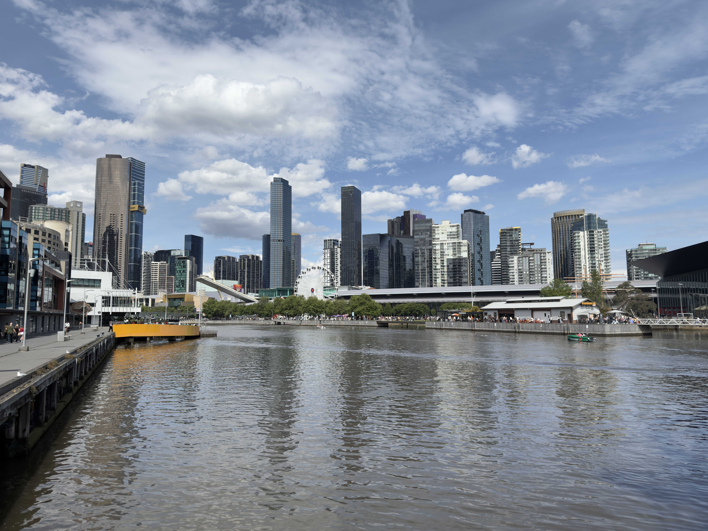

sudosu
sudosu is the name for my personal project portfolio.
It is hosted on my
Dell OptiPlex homelab server running Proxmox VE. I will be hosting
all of my personal projects here.
Feel free to explore and check out my work!
Currently based in Melbourne, Australia.

Fonts used:
- Plus Jakarta Sans
- Maitree